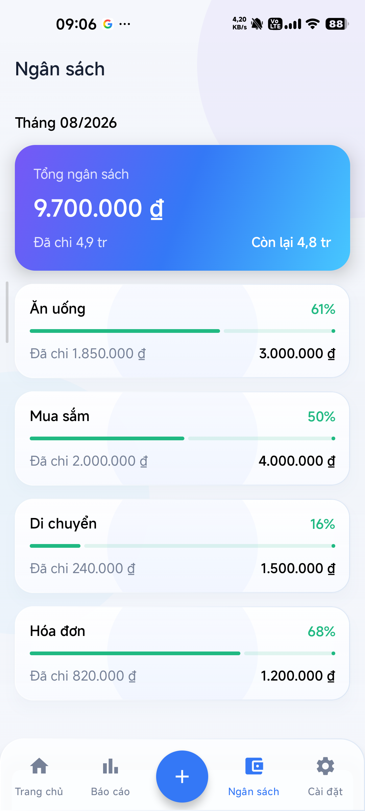
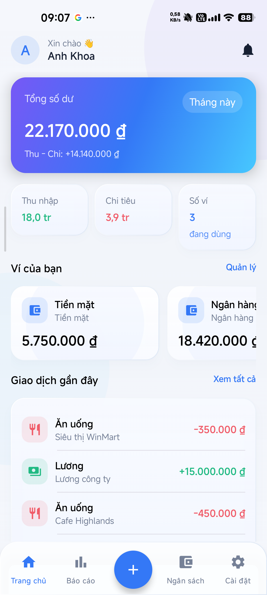
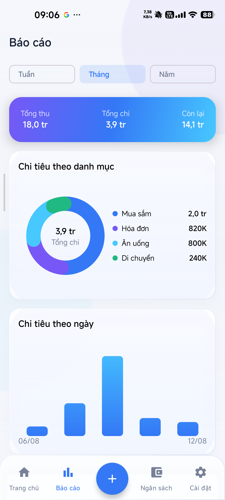
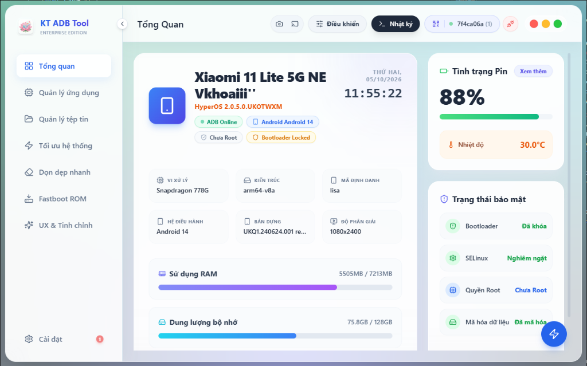

AI · AUTOMATION · SOFTWARE · EXPERIMENTS
VANKHOAI
Tôi thiết kế & xây dựng sản phẩm số.
Biến vấn đề thực tế thành phần mềm hữu ích bằng AI, tự động hóa và công nghệ hiện đại.
15+Dự án
10+Công nghệ
∞Ý tưởng
Không gian cá nhân để xây dựng, thử nghiệm và chia sẻ những thứ thực sự hữu ích.
01SELECTED WORK
Mỗi dự án là một thế giới riêng.
Không dùng một mẫu lặp lại cho mọi sản phẩm. Mỗi phần có màu sắc, nhịp chuyển động và ngôn ngữ hình ảnh riêng — nhưng vẫn thuộc cùng một hệ thiết kế.
0104
FEATURED PROJECT
FinLux
Trải nghiệm tài chính cá nhân rõ ràng và dễ kiểm soát.
Ứng dụng Android Native mã nguồn mở để quản lý thu chi, ví, ngân sách và báo cáo với ngôn ngữ Liquid Glass hiện đại.
KotlinJetpack ComposeFirebaseClean Architecture
GitHub ↗



0204
ENGINEERING TOOL
KT ADB Tool Pro
Kiểm soát Android mạnh mẽ, nhưng an toàn là nguyên tắc đầu tiên.
Bộ công cụ Electron cho ADB/Fastboot với quản lý thiết bị, debloat, tối ưu, screen capture và Safety Shield nhiều lớp.
ElectronReactTypeScriptADB / Fastboot
GitHub ↗

0304
FEATURED PROJECT
Smart Document
Smart Document
Assistant
Hiểu cấu trúc tài liệu trước khi chạm vào nội dung.
Word Add-in phân tích cấu trúc, kiểm tra Document Health, preview thay đổi và áp dụng safe-fix có kiểm soát.
Office.jsReactTypeScriptSemantic Rules
GitHub ↗
W
Heading
Table
Semantic Structure
Preview
Smart Document AssistantAnalyzeCheckSuggestFixPreviewExport
Document Health
- Structure
- Headings
- Tables
- Style Consistency
READY
0404
AI PRODUCT
AI Meeting
AI Meeting
Assistant
Từ cuộc trò chuyện đến quyết định có thể hành động.
Gỡ băng có speaker/timestamp, phân tích biên bản theo cấu trúc, theo dõi quyết định và action items, tích hợp hệ sinh thái Google.
ReactGeminiFirebaseMotion
GitHub ↗
00:18:42Đang phân tích cuộc họp
Transcript
00:12 Speaker 1 — Chốt hướng triển khai theo phương án mới.
00:18 Speaker 2 — Tôi sẽ cập nhật action items sau cuộc họp.
KEY DECISIONPilot trước, sau đó mở rộng.
ACTION ITEMChuẩn hóa tài liệu bàn giaoOwner · Deadline · Priority
02THE LAB
Phần còn lại của phòng thí nghiệm.
Các công cụ, thử nghiệm và sản phẩm khác — nơi những ý tưởng nhỏ được kiểm chứng bằng code.
03ABOUT
Ít “AI ở mọi nơi”.
Nhiều sản phẩm đáng để sử dụng hơn.
Tôi thích biến những công việc lặp lại, khó kiểm soát hoặc dễ sai thành phần mềm có trải nghiệm rõ ràng, an toàn và thực dụng.
Các dự án trải dài từ Android Native, desktop tooling, Office Add-in đến ứng dụng AI — nhưng cùng một nguyên tắc: giải quyết vấn đề thật trước, công nghệ đến sau.
KEEP BUILDING
Có một ý tưởng thú vị?
Xem source, theo dõi dự án đang phát triển hoặc bắt đầu một cuộc trò chuyện từ GitHub.
@khoaiprovip123↗